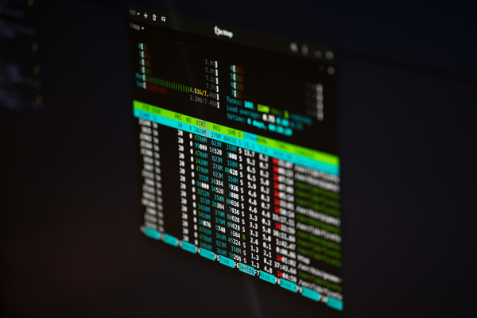

Моё хобби
Готовка

После программирования и изучения различных Open Source технологий, мне также нравится готовка. Не могу сказать, какую именно кухню я практикую, так как готовка для меня - это творческий процесс, в моменты вдохновения я часто экспериментирую и полагаюсь на интуицию. К счастью, в 90% случаев, интуиция меня не подводит, а остальные 10% - это тоже опыт. Думаю, как раз в этих 10 процентах, на свет и появилась всеми обожаемая пицца с ананасами.
Пицца с ананасами норм!
Linux

Люблю изучать различные Open Source решения. Было время (сейчас оно ушло), когда я переустанавливал систему днями напролет.
Почему? Потому что изучение GNU\Linux операционных систем по другому невозможно.
Пользователю дается полная свобода и ужасающая мощь... которая приводит к руинам операционной системы. Если чинить навыков пока нет,
запускаем переустановку.
Из всех плюс\минус популярных дистрибутивов и desktop environment, я,
думаю, попробовал все.
Раве что, не добрался до Gentoo и не собирал
Linux from scratch.

BTW I Use Arch!
Программирование
Основное хобби. Все мы здесь собрались ради программирования. У программирования имеются свои плюсы и минусы: ты можешь вытворять всякое и просто космически поощрять свою лень (лично я в какой-то момент решил лишний раз не двигаться и написал пару BASH скриптов, чтобы со смартфона выполнять различные действия на компьютере. Это было чудесно.). Среди минусов - люди, зачастую, вообще тебя не понимают и тебе не с кем обсудить крутую фичу. Яркий пример - FastAPI само пишет документацию! Вау!
Тем временем окружающие
*Все картинки принадлежат только их авторам и взяты из открытых источников.